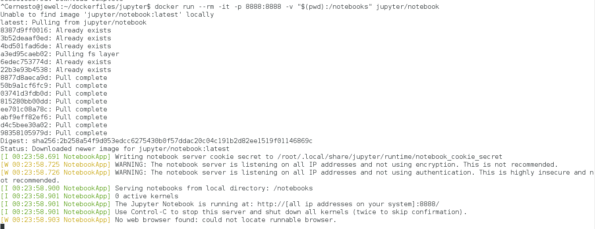
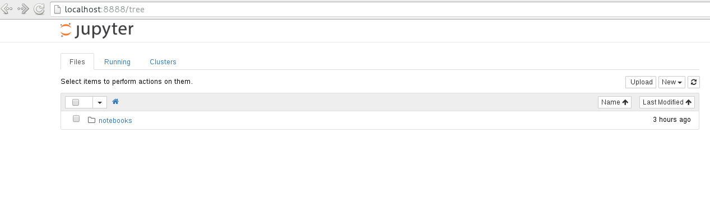
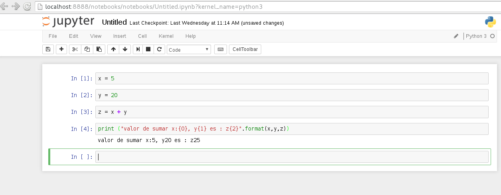

Usar Jupyter Notebook desde un contenedor de Docker
Posted on sáb 26 marzo 2016 in Tutorial Python • 2 min read
Jupyter Notebook es una aplicación web que permite crear y compartir documentos que contienen código, gráficos y texto. Sus usos incluyen limpieza y transformación de datos, simulación numérica, modelado estadístico, machine learning y mucho más. Más información lo pueden ver en este enlace.
La idea es ejecutar jupyter notebook desde un contenedor docker donde se guardarán los archivos generados en el directorio definido por medio de volumen.
Los artículos anteriores sobre docker son:
1. Instalar Docker en Debian Jessie
-
Iniciando Django con docker usando docker-compose con postgresql como microservicio.
-
Crear un entorno de Integración y Despligue continue con Docker para node.js.
Existe varias imagenes de Docker de la gente de jupyter, la que se va a usar es la de jupyter notebook.
Para ejecutar el contenedor ejecutamos lo siguientes comandos:
$docker run --rm -it -p 8888:8888 -v "$(pwd):/notebooks" jupyter/notebook
Al ejecutar el comando se tiene lo que muestra la siguiente imagen:

El puerto externo al contenedor será el 8888, igual que el interno, el volumen se maneja desde el directorio donde se ejecuta el comando anterior.
Desde un navegador se abre el siguiente enlace: http://localhost:8888/ .

Se crea un documento donde se realiza una serie de instrucciones de python y se salva con nombre prueba-python:

Al ejecutar un ls -l en el directorio donde se inició el contenedor se tiene el archivo prueba-python.ipynb:
ls -l notebooks/
total 4
-rw-r--r-- 1 root root 1390 mar 26 20:04 prueba-python.ipynb
Por medio de la opción de volumen se está compartiendo el directorio notebooks del contenedor en el equipo anfitrión.
¡Haz tu donativo! Si te gustó el artículo puedes realizar un donativo con Bitcoin (BTC) usando la billetera digital de tu preferencia a la siguiente dirección: 17MtNybhdkA9GV3UNS6BTwPcuhjXoPrSzV
O Escaneando el código QR desde la billetera: